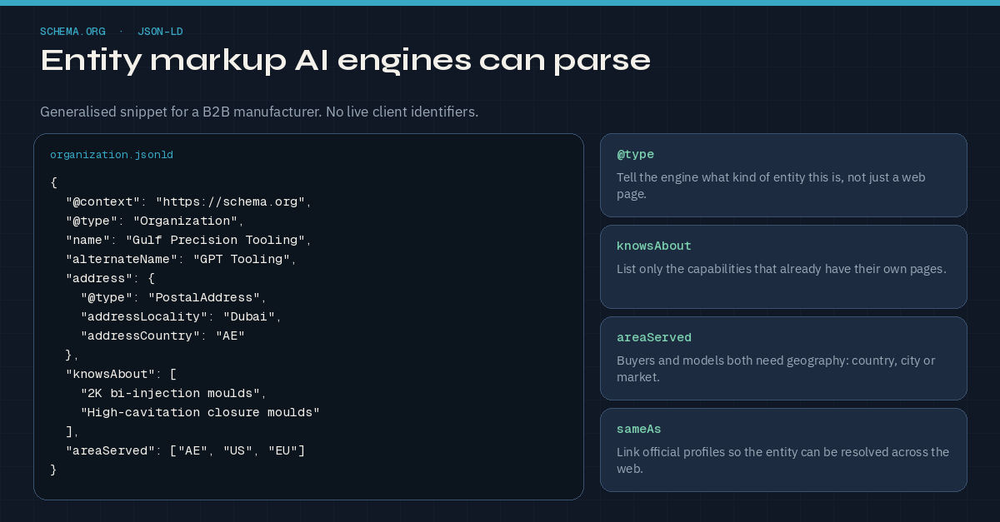

Teaching AI engines the catalogue of a UAE plastics manufacturer
A diversified plastics manufacturer in the UAE can do many things well and still be invisible in an AI answer. Injection moulding, blown and cast film, in-mould labelling, assembly and product development are different businesses to a buyer. To a language model looking at a single homepage, they can collapse into one vague sentence: a company in Dubai that makes plastic. The work I did was to make the catalogue explicit — as pages, as a sitemap, and as organisation-level structured data — so a model asked about a specific process had a place to land. Where the stack is still incomplete, I say so. I will not attribute AI-engine rankings I have not measured.

Context
The manufacturer has been in the region for decades. It runs more than one processing method under one group: technical and high-volume injection moulding, film and bag extrusion, assembly and automation, and a product-development path that includes material selection and design. It sells into packaging, construction, aviation, food, retail and industrial buyers. The site already had a deep tree of service and product URLs. The job was not to invent a catalogue. It was to make that catalogue usable to crawlers and to answer engines.
The problem
Industrial sites often fail AI search in three predictable ways. They hide the work behind a single capabilities page, or behind PDFs a model may not fetch. They mark up the organisation once on the homepage and leave product and service URLs as bare WebPage nodes, so the engine knows only that the URL is on the same host. And they assume a long sitemap is the same thing as a machine-readable brief. A sitemap tells a crawler what exists. An llms.txt tells a model what to prefer, in a few dozen lines.
A related brand site in the same group showed the opposite shape: a much smaller product set, thinner metadata, and almost no organisation markup. A method that stops at the largest website leaves the group only half-described.
What I did, technically
Honour the entity tree
The public sitemap already listed on the order of a hundred page URLs, organised the way a sales engineer thinks: injection-moulding methods (insert, gas-assist, clean-room, high-volume, in-mould labelling), extrusion methods (blown film, cast sheet, profile, printing and coating), assembly and tooling support, a staged product-development path, industry pages, and product families such as bags and films.
I treated that tree as the source of truth. Each node needed a unique URL, a title that names the process or product, a meta description, a visible H1, and internal links up to the parent capability and across to related methods. Breadcrumb markup was already present and was worth keeping: it tells an engine the position of a page in the catalogue.
This is ordinary information architecture, and it is the most important AEO work a manufacturer can do. If insert moulding is only a heading halfway down a long services page, it is a heading. If it has a URL, a title and a short definition, it is an entity.
Organisation-level schema
On the homepage and on the inner pages I used Organization, WebSite, WebPage and BreadcrumbList markup, with a short description of the processing methods the group is actually known for. That is the minimum a knowledge graph needs to attach the catalogue to a single company in the UAE.
{
"@context": "https://schema.org",
"@type": "Organization",
"name": "UAE plastics manufacturer",
"description": "Injection moulding, film extrusion and product development for packaging, construction and industrial buyers, based in the UAE.",
"address": {
"@type": "PostalAddress",
"addressLocality": "Dubai",
"addressCountry": "AE"
}
}
I did not add knowsAbout, Service or Product markup where it was not yet on the page. At the time of this audit, the service and product URLs still expose only organisation and webpage schema, not a node for the thing the page is about. That is a real gap, and the next technical step, not a result I will pretend is already shipped.

Crawl policy and the sitemap
Public pages are reachable to crawlers. A User-agent: * rule with only a few form and comment-path disallows leaves GPTBot and its peers allowed by default. I would still rather name those bots explicitly, and I would rather see a Sitemap: line in robots.txt pointing at the XML index that already exists. Implicit allow is not the same as a policy you can defend when a plugin later adds a block. The sitemap index already splits posts, pages and other types; for a manufacturer, the page sitemap is the one that matters.
The missing brief
/llms.txt is the layer this site did not yet serve as a real file. Requests to that path, and to the common alternate paths, returned the HTML homepage with a 200 status. That soft success is worse than a clean 404, because a model asking for a brief receives a full marketing document and may think it has the file. The right fix is a short text/plain brief that summarises the group and links the top process, product, industry and contact pages, with no facts that are not already on those pages.
A note on the smaller brand site
A second, smaller public site in the same group had a short product list, a sitemap, and almost no entity markup: no organisation node on the pages I checked, and no meta description on the homepage. If both brands are meant to be findable, the same stack has to be applied twice.
How AI engines pick this up
The winning pattern is "process plus place plus industry". A model asked for a clean-room moulder in the UAE needs a page that says exactly that. The deep URL tree gives it those landing points, and organisation markup attaches them to one company. What the engine cannot yet get, until the gaps close, is a short briefing, or a Service/Product graph that distinguishes a product family from a process without reading the whole HTML. That is why I will not claim the work is finished.
Results I can actually verify
I can verify that the manufacturer's official pages appear in conventional web search for its brand and for category queries around plastic injection moulding and custom plastics in the UAE. I can verify a large, organised page sitemap, organisation-level JSON-LD, canonical tags, and crawl access to public URLs. I cannot verify a live llms.txt, named AI-crawler rules, or Product/Service/FAQPage markup on the leaf pages, and I cannot independently query ChatGPT, Perplexity or AI Overviews, so I will not report citation ranks or lead numbers.
Lessons
A deep catalogue is an advantage only if every node is a real page with a real title. Do not confuse a 200 response with a correct file: an llms.txt that is actually your homepage is a bug. Apply Service and Product markup at the leaf, not only Organization at the root. And if the group has more than one public brand, describe each one. Silence on the smaller site is a missing entity, not discretion.
Common questions
Is a large sitemap enough for AEO?
No. A sitemap is a list of URLs. AEO also needs a clear entity on each URL, consistent facts, and preferably a short brief. Thousands of thin pages would hurt more than they help.
Should every bag SKU be its own entity?
No. Family pages are the right grain for most manufacturers. Create a deeper URL only when buyers search for that variant and you have something distinct to say.
Why not just add FAQ schema to the homepage?
Because the questions are different at each leaf. Write the FAQ on the page that can answer it, then mark that page up.